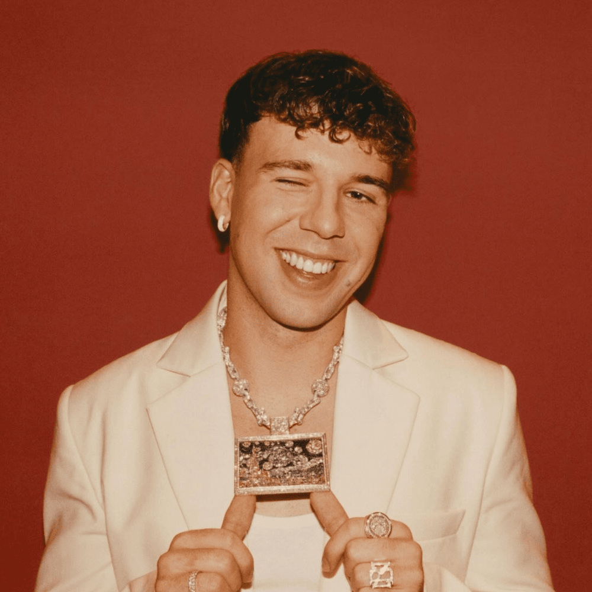

Quevedo
Quevedo comenzó su carrera en 2020 con el productor Linton. En 2022, su éxito con Bizarrap lo lanzó a la fama global. En 2024, lanzó "La Última", reflexionando sobre su carrera.
Explora su webEspaña
Puerto Rico

Colombia

Argentina

Quevedo comenzó su carrera en 2020 con el productor Linton. En 2022, su éxito con Bizarrap lo lanzó a la fama global. En 2024, lanzó "La Última", reflexionando sobre su carrera.
Explora su webSaiko se consolidó en 2022 con "Polaris". En 2024, lanzó su primer álbum "Sakura", con colaboraciones de J Balvin y Bryant Myers.
Explora su web
Lucho RK ha ganado reconocimiento en la escena urbana canaria con un estilo auténtico y letras profundas.
Escúchalo en YouTube
Raúl Clyde combina rap, trap y reguetón, destacándose en la escena emergente del género urbano.
Descubre másCruz Cafuné es un rapero y compositor de Tenerife, reconocido por su estilo único que fusiona rap, trap y letras introspectivas.
Explora su webLa Pantera es una cantante y rapera española conocida por su estilo directo y auténtico, fusionando trap, rap y música urbana con letras poderosas y personales.
Escúchalo en YouTube